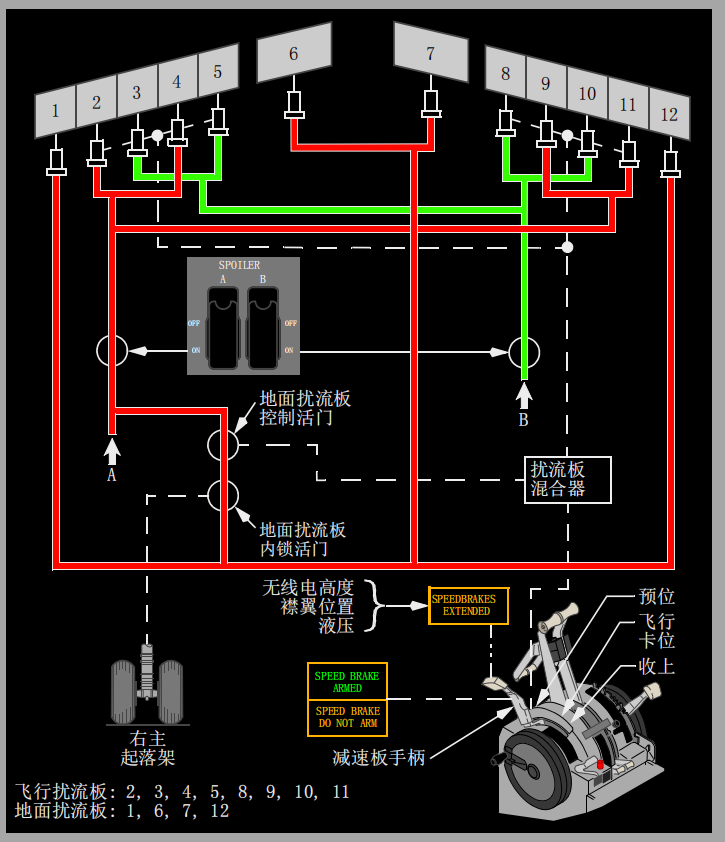

内部相关链接:
飞行操纵面板
1 减速板(SPEED BRAKE)手柄
下卡位(DOWN)
- 所有飞行和地面扰流板在整流位置。
预位(ARMED） –
• 自动减速板系统预位
• 接地时,减速板(SPEED BRAKE)手柄移至UP位，并且所有飞行和地面扰流板放出。(选型)
50% –
• 如果减速板升起超过50%,并且减速板的卸载功能被激活，则；
• 减速板手柄移至该位置
• 所有飞行扰流板收至其最大位置的一半以供飞行中使用。
飞行卡位(FLIGHT DETENT)
- 飞行时，所有飞行扰流板放到最大位置。
升起(UP)
- 所有飞行和地面扰流板升起到最大位置以供地面使用。
2 减速板预位(SPEED BRAKE ARMED)指示灯
当减速板(SPEED BRAKE)手柄在下卡位(DOWN)时，灯不亮。
亮(绿色)
- 表明自动减速板系统输入有效。
3 减速板不能预位(SPEED BRAKE DO NOT ARM)指示灯
当减速板(SPEED BRAKE)手柄在下卡位(DOWN)时，灯不亮。
亮(琥珀色) -
• 指示不正常状况或有测试信号输入到自动减速板系统，或
• 着陆期间,指示机轮速度已降至60节以下，并且减速板手柄不在下卡(DOWN)位。
• 指示非正常情况或当襟翼收起时有测试信号输入到减速板卸载系统(选型)，或
• 着陆期间,指示机轮速度已降至60节以下，并且减速板手柄不在下卡(DOWN)位。
4 减速板放出(SPEEDBRAKES EXTENDED)指示灯
亮(琥珀色) -
• 在空中-
• 减速板(SPEED BRAKE)手柄超过预位(ARMED)位置，且
• 后缘襟翼放出大于襟翼10, 或
• 无线电高度小于800英尺
• 在地面-
• 减速板(SPEED BRAKE)手柄在下卡(DOWN)位，
• 地面扰流板未收起。
Note: 在地面, 当液压A系统压力小于750 psi时，减速板升起(SPEEDBRAKES EXTENDED)指示灯不亮。
减速板
减速板包括飞行扰流板和地面扰流板。A液压系统向所有四块地面扰流板提供动力，每个机翼上表面各有两块。
减速板(SPEED BRAKE)手柄控制扰流板。
减速板手柄工作时，若飞机在地面，所有的扰流板升起，若飞机在空中时，仅飞行扰流板升起。
减速板放出(SPEEDBRAKES EXTENDED)指示灯提供扰流板在空中和地面的操作指示。
在空中，该指示灯亮以提醒机组飞机在着陆形态或低于800英尺离地高度时，但减速板已放出。
在地面，当探测到地面扰流板关断活门内有液压压力且减速板手柄在下卡(DOWN)位时，该指示灯亮。
空中操作
在空中操作减速板(SPEED BRAKE)手柄将使所有的飞行扰流板对称升起，起到减速板的作用。
转弯放飞行扰流板时要特别小心，因为它们会大大增加横滚率。
当减速板在中间位置时，横滚率会明显增大。
移动减速板手柄位置超过飞行卡位(FLIGHT DETENT)会引起抖振，空中禁止如此操作。
在某些大全重/空速相结合的条件下，减速板卸载特性会限制减速板的放出。(选型)
在这些条件下，如果减速板已经放至飞行卡位(FLIGHT DETENT), 则会自动收回到50%的飞行卡位。
减速板(SPEED BRAKE)手柄移动以反映减速板位置。
可以进行人工超控。当卸载功能启用时，需使用更大的力将减速板手柄移至超过50%位置。
在50%和升起位（UP）之间使用人工超控时，减速板手柄必须保持在所需的位置。
卸载功能启用时，如果减速板手柄移到UP位，则减速板手柄保持不动。
卸载功能解除时，可人工将减速板收回至飞行卡位(FLIGHT DETENT)。
减速板手柄机械装置上集成了手柄止动功能。当飞机在空中且襟翼收上时，手柄止动特性可防止减速板手柄移动到超过飞行卡位。(选型)
如果出现断电情况，手柄止动特性消除，减速板手柄可以全程移动。
飞行扰流板
每个机翼的上表面各有四块飞行扰流板。
每个液压系统(A和B系统)向不同的扰流板提供动力以进行隔离操作，以便液压系统失效时仍可保持对称操作。
两个飞行扰流板(SPOILER)电门控制液压关断活门。
在空中和地面，飞行扰流板用作减速板以增加阻力并减小升力。
飞行扰流板也根据驾驶盘指令来协助横滚控制。
扰流板混合器与副翼钢索驱动装置相连，控制每块扰流板上的液压动力控制组件，使扰流板随副翼成比例移动。
副翼向上偏转时，机翼上的飞行扰流板升起，副翼向下时，飞行扰流板保持与翼面齐平。
当驾驶盘偏转超过约10°时，飞行扰流板开始偏转。

地面操作
着陆过程中，当发生以下情况时，自动减速板系统工作：
• 减速板(SPEED BREAK)手柄在预位(ARMED)位
• 减速板预位(SPEED BRAKE ARMED)指示灯亮
• 无线电高度小于10英尺
• 接地时，起落架支柱压缩
Note: 任何起落架支柱的压缩均会使飞行扰流板放出。右主起落架支柱的压缩能使地面扰流板放出。
• 两个推力手柄都收到慢车位(IDLE)
• 主起落架机轮加速转动(大于60节)。
减速板手柄自动移至UP位，扰流板放出。
Note: 在所有襟翼收上(无襟翼)着陆后，减速板(SPEED BRAKE)手柄不会移动到超过飞行卡位(FLIGTH DETENT)，扰流板不会完全升起。
如果未探测到机轮加速转动的信号，则当空/地系统感应到地面方式(任何起落架支柱压缩)时，减速板手柄移至伸出(UP)位，飞行扰流板自动升起。
右侧主起落架支柱压缩时，机械连接装置打开地面扰流板内锁活门，地面扰流板升起。
着陆或中断起飞时，如果减速板手柄在下卡(DOWN)位，则当发生以下情况时自动减速板系统工作：
• 主起落架机轮加速转动(大于60节)。
• 两个推力手柄都收到慢车(IDLE)位
• 反推手柄到位，用于进行反推。
减速板手柄自动移至伸出(UP)位，扰流板升起。
中断起飞(RTO)或着陆后，如果前推任一个推力手柄，减速板手柄自动移至下卡(DOWN)位，所有的扰流板收起。
也可通过人工将减速板手柄移至下卡位来收起扰流板。